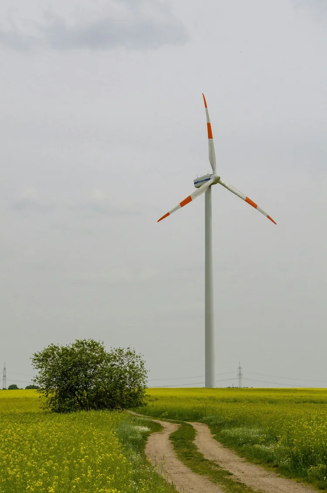

Project Overview
Our team has been working on an app in collaboration with the Tompkins Climate Fund, allowing you to carbon offset, a process by which you donate money in order to account for your carbon footprint. All donations go to the Finger Lakes Climate Fund, which then uses the money to invest in local sustainable projects

In the past semester, our team has made significant strides toward creating a user-friendly platform that simplifies carbon offset purchases. By utilizing React Native & Expo Go, the app, built with a focus on accessibility and transparency, features tools that allow users to track their environmental impact and offset any carbon that they produce. Additional features include the integration of detailed analytics and personalized recommendations to help users make more informed decisions. Local residents of Tompkins County will have an easy-to-use opportunity to contribute towards building a more sustainable community.
Support this work
This project is closed. The Software Subteam is building the next generation of apps with local partners.